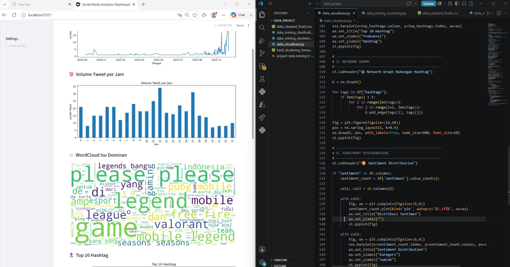
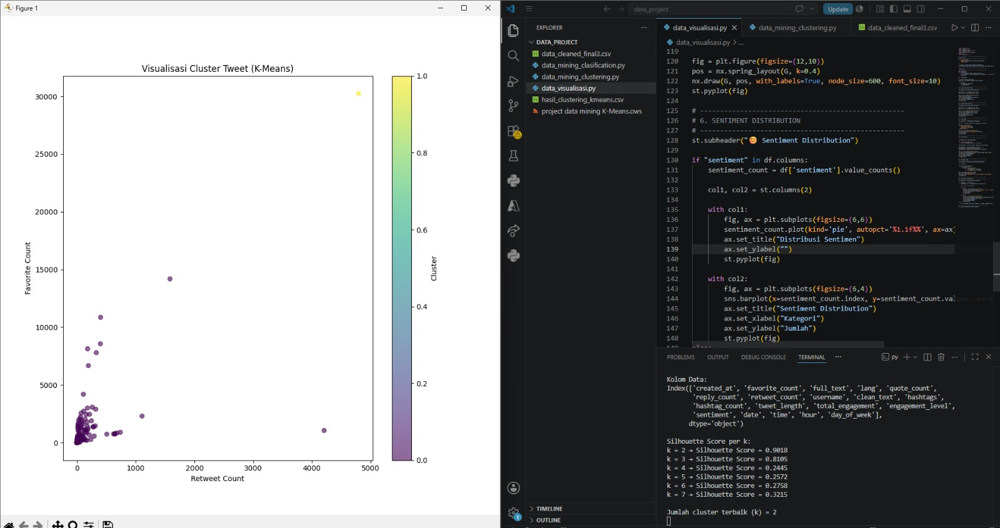

Mengembangkan aplikasi Business Intelligence berbasis Python untuk menganalisis data media sosial melalui pendekatan data mining dan visual analytics. Proyek ini mencakup proses data preprocessing, klasifikasi menggunakan algoritma Random Forest, clustering menggunakan K-Means, serta visualisasi interaktif yang menampilkan tren aktivitas, distribusi hashtag, WordCloud, dan hubungan antar hashtag. Dashboard dirancang untuk membantu pengguna memperoleh insight yang lebih mudah dipahami dan mendukung pengambilan keputusan berbasis data.